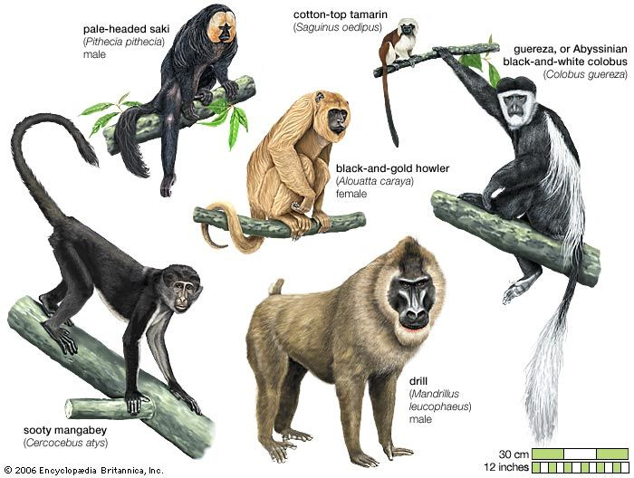

Zoo Animals
Bears
Click here for more info
 Bear, any of eight species of large short-tailed carnivores found in the Americas, Europe, and Asia. The sun bear is the smallest, often weighing less than 50 kg (110 pounds). The largest bear, and the largest land carnivore, is either the polar bear or the Kodiak bear; either can weigh up to 720 kg (1,600 pounds).
Bear, any of eight species of large short-tailed carnivores found in the Americas, Europe, and Asia. The sun bear is the smallest, often weighing less than 50 kg (110 pounds). The largest bear, and the largest land carnivore, is either the polar bear or the Kodiak bear; either can weigh up to 720 kg (1,600 pounds).
1. Ollie
2. Mona
Giraffes
Click here for more info
Giraffe, any of four species of long-necked cud-chewing hoofed mammals of Africa, the tallest of all land animals.
1. Frankie
2. Coconut
Lions
Click here for more info
Lion, large, powerfully built cat that is second in size only to the tiger. The proverbial ‘king of the beasts,’ the lion has been one of the best-known wild animals since earliest times. Lions are most active at night and live in a variety of habitats but prefer grassland, savanna, dense scrub, and open woodland.
1. Mella
2.Karl
Monkeys
Click here for more info

Monkey, in general, any of nearly 200 species of tailed primate, with the exception of lemurs, tarsiers, and lorises. The presence of a tail (even if only a tiny nub), along with their narrow-chested bodies and other features of the skeleton, distinguishes monkeys from apes.
1. Cookie
2. Earl
3. Banana Pudding
Alligators
Click here for more info
 Alligator, either of two crocodilians related to the tropical American caimans. Alligators can be differentiated from true crocodiles by the form of their jaw and teeth. Alligators possess a broad U-shaped snout and have an ‘overbite’; that is, all the teeth of the lower jaw fit within the teeth of the upper jaw.
Alligator, either of two crocodilians related to the tropical American caimans. Alligators can be differentiated from true crocodiles by the form of their jaw and teeth. Alligators possess a broad U-shaped snout and have an ‘overbite’; that is, all the teeth of the lower jaw fit within the teeth of the upper jaw.
1. Wren
2. Aspen
3. Mika